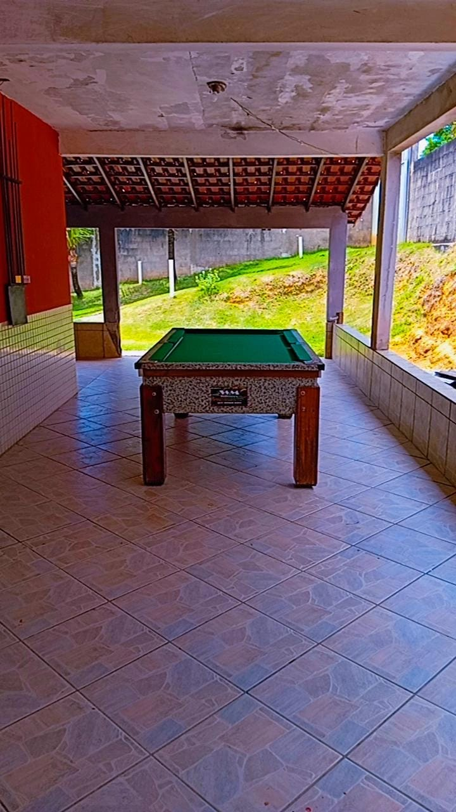
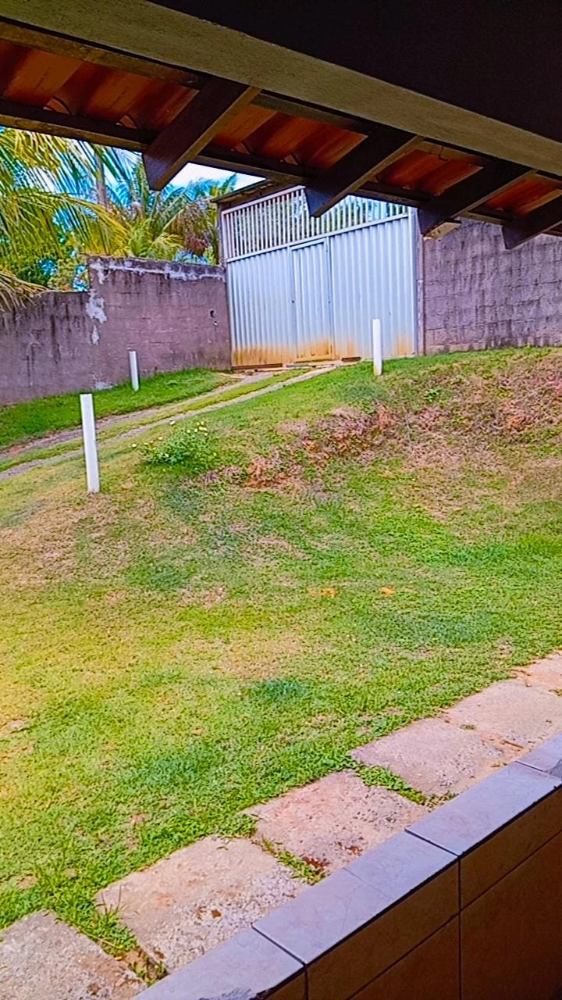
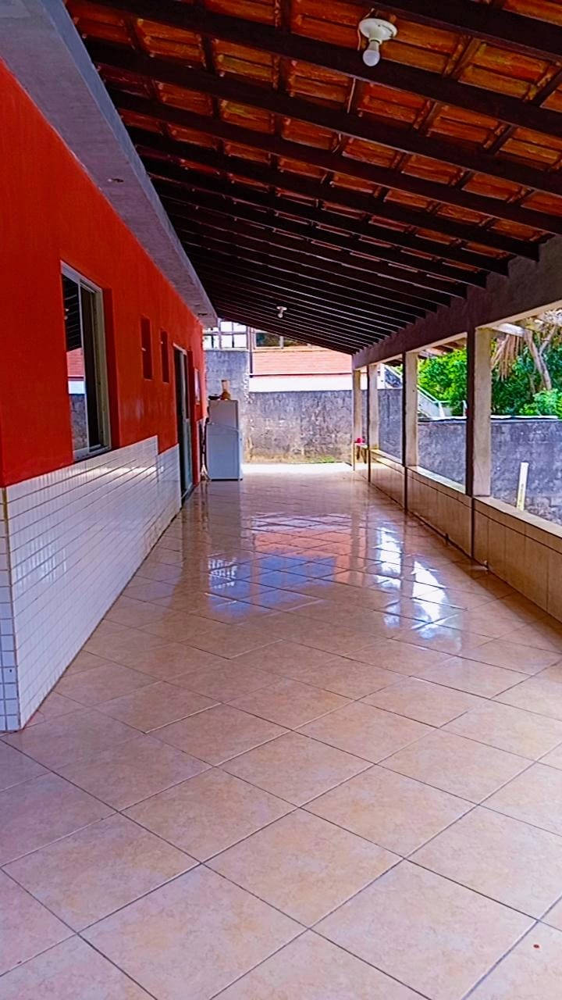
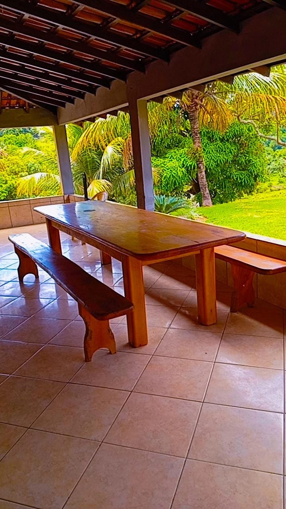

Clínica parceira — Vitória
Vitória, ES
Cadastro demonstrativo. Substitua pelos dados reais da clínica antes de publicar.
Ver contatoUm espaço para consultar opções de atendimento, conhecer as clínicas cadastradas e encontrar os canais oficiais de contato.
Ver clínicasSelecione uma cidade para encontrar as opções cadastradas.
Cadastro demonstrativo. Substitua pelos dados reais da clínica antes de publicar.
Ver contatoCadastro demonstrativo. Substitua pelos dados reais da clínica antes de publicar.
Ver contatoCadastro demonstrativo. Substitua pelos dados reais da clínica antes de publicar.
Ver contato< >




Clínica parceira em Guarapari com atendimento especializado.
Ver contato
Clínica parceira em Guarapari com atendimento especializado.
Ver contatoAtendimento especializado em Guarapari
Ver contato
Cadastro real. Clínica parceira em Guarapari com atendimento especializado.
Ver contatoOs cadastros acima são apenas exemplos. Não publique informações fictícias como se fossem clínicas reais.
Use o filtro para localizar as opções cadastradas.
Confira as informações fornecidas pela clínica parceira.
Use os canais oficiais informados no cadastro para tirar dúvidas.
Entre em contato com o responsável pelo projeto para solicitar o cadastro.
Solicitar cadastro